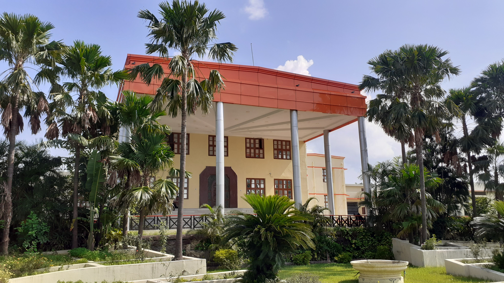
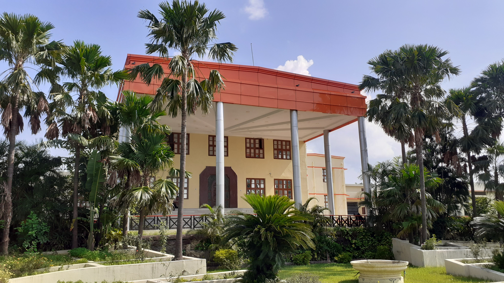

About college

 

Veer Bahadur Singh Purvanchal University, formerly Purvanchal University, is a public state university based in Jaunpur, Uttar Pradesh. It was established in 1987 as a residential-cum-affiliating university. It is named after Shri Vir Bahadur Singh, the former chief minister of Uttar Pradesh. The university is engaged in research through MoU with foreign and local universities, organizations and institutions. Many of its departments are identified by UGC as Centres of Excellence. Started with 69 affiliated colleges, the university has widened its spectrum of activities with 800+ affiliated graduate and post-graduate colleges and students enrollment of nearly 800,000 Plus as on ( 2013–2019 ) in 12 districts of Eastern Uttar Pradesh. The infrastructure development, achievement of academic excellence, quality assurance in the higher education and socio-economic development of this highly backward and rural region are the priority areas for the university.
Campus
The university is about 11 km from the city of Jaunpur on Jaunpur-Shahganj road which divides its 171.5 acres (0.694 km2) campus into two part, one is campus and another one is hostel, teacher's colony, guest house and vice chancellor residence.
Facilities
- Auditorium
- Central Library
- Sports Complex
- Hostel
- Conference Hall
- Seminar Hall
- Labs
- Wi-Fi Campus
Department of Engineering

Uma Nath Singh Institute of Engineering and Technology
The Uma Nath Singh Institute of Engineering and Technology, Started in the year 1997 initially with three departments in the faculty of Engineering and Technology at Veer Bahadur Singh Purvanchal University, Jaunpur. Initially the institute launched its academic activities with strength of ninety students. In the year 2002, the institute raised the annual intake from 90 to 180.The institute in a very short span of time established all the facilities to impart effective education to students. the institute achieved the distinction as one of the best equipped institute of the state. The institute boasts of having adequate numbers of faculty members with other required facilities like the computer centre, fiber optics Laboratory, microwave Laboratory, instrumentation facilities, language lab, computer labs, mechanical workshop.
To develop a work culture in imparting effective theoretical and more important the practical training to the students , so that they could excel in their objectives to bring the state of Uttar Pradesh and the country on the world map at a rapid pace as prominent centre of study and research. To inculcate scientific temper in all of the Engineering fraternity to create proper base in meeting their goals through practicing an ethical, moral and value education
To accomplish an international competence in the quality of Engineering and technological activities through effective training to undergraduate students of the Department of Electronics and Communication Engineering. To create a wider base of research and development and to establish center of higher learning in the emerging area of Electronics and Communication Engineering. To cater for the needs of industries in the region and beyond through proper institute industry interaction. To carry out sponsored research and training as well as extension activities to spread the knowledge to create effectively a brigade of skilled personnel in the area of telecom and networking. To achieve and develop skills of international level in Engineering through the application of enabling technologies and dissemination of state of the art knowledge and imparting effective training to Engineering undergraduates. To develop the institute of Engineering as a nodal centre for advance study and research, so that it may also serve as a resource centre for industries in and around the region to share and care their needs and other expectations.